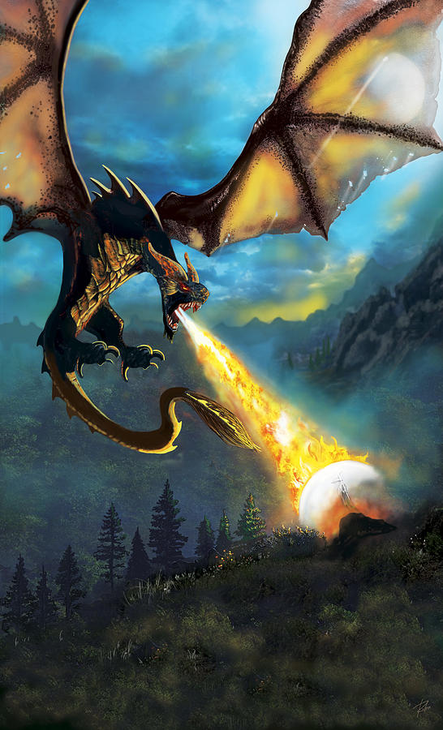

.1. Ռասաներ և Ազգեր
Թոլքինի լեգենդարիումում կան շատ ռասաներ
- Այնուրներ (Վալարներ),(Մայարներ)
- Մարդիկ
- Էլֆեր
- Հոբիթներ
- Դվորֆներ - Թզուկներ
- Էնտեր
- Արծիվներ
- Բելրոքներ
- Օրքեր
- Վիշապներ
- Թրոլներ
- Գոբլիններ
.2. Հերոսներ
Էրու Իլուվատար Թոլքինի լեգենդարիումի միակ միածին Աստվածը: Էրուն միշտ բնակվում է Անժամանակության մեջ: «Էրու Իլուվատար» անունը դա այդ Աստծո անունը չէ այլ էլֆերի Քուենիա լեզվից թարքմանաբար «Էրու» նշանակում է «մեկ, միածին» «Իլուվատար» նշանակում է «Ամենայն Հայր, ամենահայր»։ Նա է կանգնած աշխարհի ստեղշման գաղափարի հետևում։ Նա է մարդկանց ու էլֆերի արարիչը։

Մելքորը կամ Մորգոթ Թոլքինի-ի լեգենդարիումի կենտրոնական չարագործը և Արդայի առաջին Սև տիրակալըն է: Իր բնույթով - Այնուրներից մեկը, նախքան չարիքի իր շրջադարձը, դասվում էր վալարների շարքին։ Նա նրանց մեջ ամենահզոր էակն էր: Նա է հանդիսանում օրքերի, վիշապների, թրելների, գոբլինների արարիչը։
Մանվե քամիների տիրակալ, նա Իլուվատարին ամենամոտ վալարն է, նրան վիճակված էր լինել թագավորներից առաջինը, Արդայի թագավորության տերը։ Նա հանդիսանում է Մելքորի եղբայրը։ Նաև նա է հանդիսանում Հսկա արծիվների արարիչը, նրանք ծառայության մեջ են Մանվեի մոտ։
Աուլե մեծ դարբին, երկրի, լեռների մետաղների արարիչը։ Երբ Վալարները կառուցում էին Արդան, նա զբաղված էր մայրցամաքների, ժայռերի և ծովային ավազանների ստեղծմամբ։ Որպես վալարների միջից ամենահմուտը, նա է հանդիսանում Մեծ Լուսատուների, Արևի և Լուսնի համար նախատեսված նավերի և Մելքորին կապող կախարդական շղթաների վարպետը: Բացի այդ, Նա էր, ով ստեղծեց դվորֆների ռասան, թեև առանց Էրու Իլուվատարի նախնական թույլտվության, ով ի վերջո ընդունում է նրանց որպես իր որդեգրած երեխաներ։
Սաուրոն Թոլքիենի լեգենդարիումում մայարներից մեկը, իր կյանքի սկզբում, պատկանում էր Վալար Աուլեյի շքախմբին: Սաուրոնը առաջին ոգիներից մեկն էր՝ մայար, ով բռնում է Մելկորի կողմը՝ դառնալով նրա ամենահավատարիմ և հզոր ուղեկիցներից մեկը։ Հանդիսանում է Մատանիների տիրակալը։
Ունգոլիանտ Թոլքիենի լեգենդարիումում, չար ոգի հսկա սարդի տեսքով: Նրա և Մելքորի Վալինորի վրա հարձակման ժամանակ երբ Մելքորը գողանում էր Սիլմարիլները նա իր ատամներով ղմում է Ծառերի բնական սոկը և ոչնչացնում դրանք, պատելով Վալինորը Խավարի մեջ։
Ֆեանոր էլֆ, Ֆինվեի ավագ որդին: Նա Էլֆերի ամբողջ պատմության մեջ հանդիսանում է ամենահզոր և ամենամեծն էլֆը։ Նա նաև հանդիսանում է բազմաթիվ ականավոր ստեղծագործությունների ստեղծողը, ներառյալ Պալանտիրները, Թենգվարը և էլֆերի ամենամեծ գյուտը` Սիլմարիլները:
Ֆինգոլֆին էլֆ, Ֆինվեի կրդսեր որդին։ Նոլդորների մեծամասնության աջակցության շնորհիվ թագավորության ձգտելով՝ նա միանում է ՄիջԵրկրի մեկնելուն։ Ֆեանորի մահից և նրա որդիներից ավագի՝ Մաեդրոսի տիտղոսից հրաժարվելուց հետո նա դարնում է էլֆ-Նոլդորների թագավորը։
Էարենդիլ կիսաէլֆ, Թոլքիենի լեգենդարիումում մարդկանց միջից ամենամեծ նավագնացը, Նումինորի առաջին Արքան։ Նա հանդիսանում է Բերենի և Լյութիենի որդիներից մեկը, և Էլրոնդի եղբայրը։
Գալադրիել էլֆ, Էլֆերի մատանիների տիրակալներից ամենահզորը: Նոլդորների տիրակալ Ֆինարֆինի կրտսեր դուստրը և Կելեբորնի կինը։ Լոթլորիեն թագավորի մահից հետո նրա նշանակությունը Լոտլորիենում այնքան մեծացավ, որ անտառի էլֆերը նրան առաջարկեցին Լորիենի տիրուհու կոչում։
Գիլ-Գալադ Թոլքիենի լեգենդարիումում Ֆինգոլֆինի թոռը, Ֆինվեի ծոռը։ Էլֆ Նոլդորներից, Միջերկրի Նոլդորների վեցերորդ և վերջին թագավորը: Հիմնադրել է Էլֆերի Լինդոն թագավորությունը։ Նա առաջնորդելով Լինդոնի էլֆերին, Նումենորացիների հետ միասին հաղթում է Սաուրոնին Էրեգոնի պատերազմում:
Էլրոնդ կիսաէլֆ, Էլրոնդի արմատները գալիս են Էդաինների երեք ընտանիքներից։ Էլրոնդը նաև Արագորնի հեռավոր բարեկամը, ով իր եղբոր՝ Էլրոսի ժառանգներից էր և դստեր՝ Արուենի ամուսինը։ Հանդիսանում է էլֆերի մատանիներից մեկի կրողը։
Կելեբրիմբոր Թոլքիենի լեգենդարիումում էլֆ դարբին էր, ով Երկրորդ դարաշրջանում Սաուրոնի ազդեցության տակ ստեղծեց իշխանության մատանիները։ Այնուհետև Սաուրոնը գաղտնի ստեղծեց «միածին համաիշխանության մատանին»՝ իշխանության մնացած բոլոր մատանիները ենթարկելու և ՄիջԵրկրի վրա վերահսկողություն ձեռք բերելու համար, ինչը դարձավ «Հոբիթ» և «Մատանիների տիրակալ» գրքում նկարագրված իրադարձությունների հիմքը:
Ար-Փարազոն Նումենորի քսանհինգերորդ և վերջին թագավորը: Նա Նումենորի թագավորներից ամենահզորն էր և ձգտում էր Արդայի բոլոր ժողովրդի թագավոր դառնալ։Նա նույնիսկ Գերևարեց Սաուրոնին և գերի բերեց Նումենոր, ինչը հանգեցրեց թագավորությանը դեպի չարը և տապալումը: Սաուրոնի ազդեցության տակ և մահվան վախից Ար-Ֆարազոնը հավաքեց մի մեծ արմադա, որը դեռ աշխարհը չէր տեսել, և հարձակվեց Ամանի ու Վալարի վրա՝ ձգտելով անմահություն ձեռք բերել։ Արդյունքում, Ար-Ֆարազոնը և նրա մարտիկները բանտարկվեցին Մոռացվածների քարանձավներում, իսկ նավերի արմադան ոչնչացվեց Էրու Իլուվատարի կողմից Նումենորի հետ միասին։
Էլենդիլ Թոլքիենի լեգենդարիումում Միջերկրի նումենորյան թագավորական դինաստիաների նախահայր Ամանդիլի որդու։ Իր որդիների՝ Իսիլդուրի և Անարիոնի հետ նա փրկվելով Նումենորի կործանումից և Միջերկրում հիմնելով նումենորական թագավորությունները՝ Առնորը և Գոնդորը դառնալով նրանց առաջին Բարձր թագավորը։ Նա մահացել է Էլֆերի թագավոր Գիլ-Գալադի հետ միասին Սաուրոնի հետ մենամարտում Օրոդրուինի ստորոտում՝ Վերջին դաշինքի պատերազմի ժամանակ։
Իսիլդուր Էլենդիլի ավագ որդին՝ Միջերկրի Դունեդեյնի թագավորությունների (Առնորը և Գոնդորը) երկրորդ տիրակալը։ Վերջին դաշինքի պատերազմում Էլենդիլի և Անարիոնի մահից հետո Իսիլդուրը ժառանգում է իր հոր թագավորական տիտղոսը՝ դառնալով աքսորում գտնվող Նումենորցիների տոհմի ղեկավարը։ Հենց նա է այդ պատերազմի ժամանակ կտրոըմ Սաուրոնի մատը որի վրա էր Համաիշխանության մատանին։ Սպանվել է օրքերի կողմից 2 դարաշրջանոում, երբ փորձում էր լողալով անցնել Անդուինի վրայով Գլադեն Հոլոուում կոտորածից հետո որի ժամանակ կորում է մատանին որը գտնում է Գոլլումը:
Գոլլում Նա իսկզբանե հոբիթ էր ով Անդուինի ջրերից իր ընկերոջ հետ գտնում է Համաիշխանության մատանին։ Մատանու ազդեցությունից նա դառնում է մի արարած որին անվանում են Գոլլում։ Հետագայում նա կորցնում է մատանին որը գտնում է Բիլբո Բոգինսը։
Սմաուգ Թոլքիենի լեգենդարիումում կրակ շնչող թեւավոր վիշապ: Հայտնի է 3 դարաշրջանի 2770 թվականին Դեյլ քաղաքը ոչնչացնելու և Միայնակ լեռան դվորֆների գանձերին տիրանալու համար: 2941 թվականին, զայրացած Թորին Օքենշիլդի գլխավորած ջոկատի հայտնվելով իր տիրույթում (սրանք տասներեք թզուկներ էին և հոբիթ Բիլբո Բեգինսը), Սմաուգը որոշեց ոչնչացնել Էսգարոթը՝ Երկար լճի վրա գտնվող մարդկանց քաղաքը, բայց սպանվում է Բարդ կողմից։
Տորին Թոլքիենի լեգենդարիումում Դվորֆ։ Թորինը Միայնակ լեռան տակ գտնվող թագավորության ժառանգն է, որտեղից վիշապ Սմաուգը վտարել է նրա հորն ու պապին։ Նա կազմակերպում է արշավ՝ վերադարձնելու իր նախնիների գանձերը, որին մասնակցում են նաև 12 թզուկներ և հոբիթ Բիլբո Բեգինսը։ Թորինը մահանում է Հինգ բանակների ճակատամարտում։
Գենդալֆ Մոխրագույն 5 Իսթարներից(կախարդ-հրաշագործ) մեկը Իր բնույթով նա պատկանում է Այնուրների ռասային և դասվում է փոքր (ուժի առումով) հրեշտակային ոգիների շարքին՝ Մայարին: Նրա առաքելությունը, որը վստահել էին նրան Վալարները, եղել է օգնել ՄիջԵրկրի ազատ ժողովուրդներին մութ տիրակալ Սաուրոնի դեմ պայքարում, որը հզոր Մայարներից էր: Գենդալֆը միակն էր Իսթարիներից, ով կարողացավ հաղթահարել առաջադրանքը, և Երրորդ դարաշրջանի վերջում նա վերադարձավ Անմահ երկրներ:

Սարուման Սպիտակ 5 Իսթարներից(կախարդ-հրաշագործ) մեկը։ Իսթարների օրդենի և Սպիտակ խորհրդի ղեկավարը։ Վալարի կամքով Միջերկիր է գալիս օգնելու ՄիջԵրկրի ազատ ժողովուրդներին մութ տիրակալ Սաուրոնի դեմ պայքարում։ Նախանձելով Գենդալֆի իմաստությանը չարանում է և իմանալով համաիշխանության մատանու հայտնվելու մասին ցանկանում է տիրանալ դրան չհասկանալով որ ընկնում է Սաուրոնի ազդեցության տակ։
Բիլբո Բեգինս Թոլքիենի լեգենդարիումում նա Հոբիթ էր։ Նա մասնակցել է Թորին Օքենշիլդի գլխավորությամբ դեպի Միայնակ լեռ արշավին, որի ընթացքում Գոլումի քարանձավում գտնում է համաիշխանության մատանին։ Շիր վերադառնալուց հետո Բիլբոն գրում է "Կարմիր գիրք" գիրքը որը պատմում էր իր արկածների մասին։Հետաքայում Նա որդեգրում է իր որբ եղբորորդուն՝ Ֆրոդոյին։ Իր 111-ամյակից հետո Բիլբոն լքում է Շիրը և հաստատվում Ռիվենդելում։ Խավարի տիրակալ Սաուրոնի պարտությունից հետո Ֆրոդոն իր տարեց հորեղբոր հետ նավարկում են դեպի Անմահ հողեր։
Ֆրոդո Բեգինս Ֆրոդոն դարձավ Միածին մատանու պահապանը, որին փնտրում էր խավարի տիրակալ Սաուրոնը՝ նրա օգնությամբ լիարժեք իշխանություն ստանալու համար։ Ֆրոդոն Մատանին տեղափոխում է Շիրից Ռիվենդել և կամավոր գնում այն տեղափոխելու Մորդոր, որպեսզի կործանի Դում հրաբխի կրակի մեջ որտեղ դա ստեղծվել էր:
Արագորն Իսիլդուրի անմիջական հետնորդը, Էլենդիլի ավագ որդին և Դունեդեյնի վերջին Բարձր թագավորը և Գոնդորի գահի միակ օրինական ժառանգորդը։ ՄիջԵրկրի պատմության մեջ երրորդ և վերջին մարդը, ով ամուսնացել է Էլֆի աղջկա հետ՝ նրա կինը և թագուհին Արվեն Ունդոմիելն էր՝ Էլրոնդի դուստրը: Արագորնը դարձավ իր դարաշրջանի մարդկանցից մեծագույնը. նա առաջնորդեց Արևմուտքի մարդկանց պատերազմում խավար Տեր Սաուրոնի դեմ և օգնեց ոչնչացնել Ուժի միածին մատանին (նա Մատանու եղբայրության ինը անդամներից մեկն էր), իսկ հաղթանակից հետո նա վերամիավորում է Առնորի և Գոնդորի թագավորությունները մեկ պետության մեջ։
Լեգոլաս Էլֆ Սինդարից, Հյուսիսային անտառների էլֆերի թագավոր Թրանդուիլի որդին: Մատանու եղբայրության ինը անդամներից մեկը, ով մասնակցել է Դում լեռան արշավին և Մատանու պատերազմին։ Լինելով էլֆը՝ Լեգոլասն ընկերանում է դվորֆ Գիմլիի հետ, ինչը օրինակ է ծառայում երկու ժողովուրդների համար։
Գիմլի Դուրինի թագավորական տոհմի դվորֆ, Գլոնի որդին և Օինի եղբորորդին։ Մատանու եղբայրության ինը անդամներից մեկը իր ժողովրդի միակ ներկայացուցիչը։